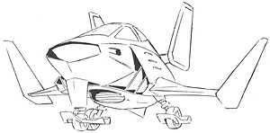

| Torieres |
|
|  | |
General and Technical Data |
|
|
Unit type: space fighter Armament: 2x 25mm vulcan gun |
|
| Technical and Historical Notes | |
| The earliest EFF space use fighter, the Torieres was designed mostly for a scouting role in an era where it still was not believed that a fighter craft could significantly damage a spaceship. Mounting a pair of 25mm vulcan guns, it was only designed to fight other fighters, battleships being thought to be the only space use weapon worth their own salt. Because of its light armament and the advent of the Minovski Particle and mobile suits, the Torieres was phased out almost entirely for the Saberfish before the One Year War, and now exists as an escort for CMC units and the Riah militia. |
 RPG quick stats sheet
RPG quick stats sheet